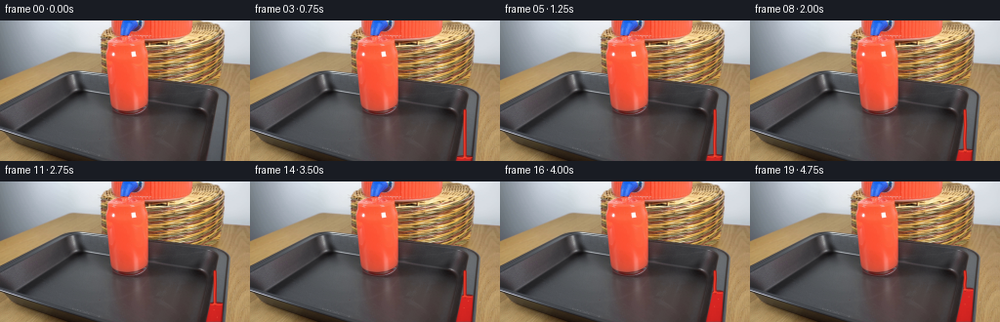
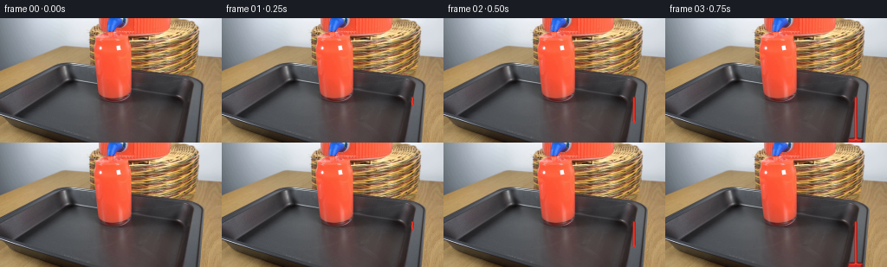
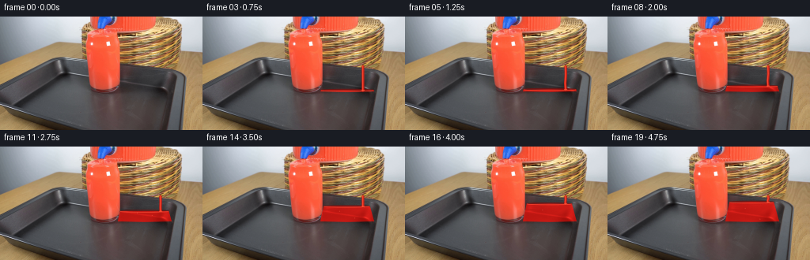
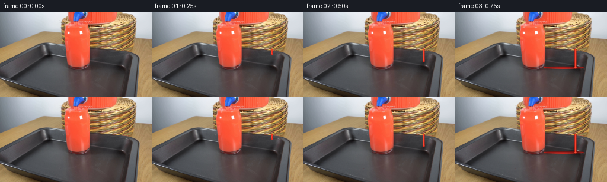

CODING AGENTS AS PIXEL WORLD MODELS
traex/GPT-5.6-Sol · 0090
点击播放 · 原生 RGB 像素
逐轮保存的候选
回放视频、检查图与代码变化。
每份候选均可单独播放。实际图片检查记录在下方工具轨迹中。
候选 01播放与检查图
点击播放 · 原生 RGB 像素


展开代码变化
--- 上一保存版本
+++ 本次保存版本
@@ -0,0 +1,181 @@
+"""Generate a locked-off five-second demonstration of red drink being dispensed.
+
+All geometry is derived in image coordinates from the supplied first frame. The
+small amount of supersampled raster drawing is used only to anti-alias the
+liquid boundaries; the photographed frame remains the background throughout.
+"""
+from pathlib import Path
+import math
+import cv2
+import numpy as np
+from PIL import Image
+import artifact_io
+
+HERE = Path(__file__).resolve().parent
+SOURCE = np.asarray(Image.open(HERE / "first_frame.png").convert("RGB"), dtype=np.uint8)
+H, W = SOURCE.shape[:2]
+SS = 4
+
+
+def smoothstep(x):
+ x = max(0.0, min(1.0, float(x)))
+ return x * x * (3.0 - 2.0 * x)
+
+
+def soft_mask(draw_fn):
+ """Draw at 4x and area-filter down to a soft 144p coverage mask."""
+ m = np.zeros((H * SS, W * SS), np.uint8)
+ draw_fn(m)
+ return cv2.resize(m, (W, H), interpolation=cv2.INTER_AREA).astype(np.float32) / 255.0
+
+
+def poly_mask(points):
+ pts = np.rint(np.asarray(points) * SS).astype(np.int32)
+ return soft_mask(lambda m: cv2.fillPoly(m, [pts], 255, lineType=cv2.LINE_AA))
+
+
+def path_mask(points, width):
+ pts = np.rint(np.asarray(points) * SS).astype(np.int32)
+ thickness = max(1, int(round(width * SS)))
+ return soft_mask(lambda m: cv2.polylines(m, [pts], False, 255, thickness,
+ lineType=cv2.LINE_AA))
+
+
+def ellipse_mask(cx, cy, rx, ry, thickness=-1, start=0, end=360):
+ def draw(m):
+ cv2.ellipse(m, (round(cx * SS), round(cy * SS)),
+ (max(1, round(rx * SS)), max(1, round(ry * SS))),
+ 0, start, end, 255,
+ -1 if thickness < 0 else max(1, round(thickness * SS)),
+ lineType=cv2.LINE_AA)
+ return soft_mask(draw)
+
+
+def blend(frame, mask, color, opacity=1.0):
+ """Alpha composite a constant or per-pixel RGB target in-place."""
+ a = np.clip(mask * opacity, 0.0, 1.0)[..., None]
+ target = np.asarray(color, dtype=np.float32)
+ frame[:] = frame * (1.0 - a) + target * a
+
+
+def glass_left(y):
+ # The visible inner left wall runs from about (220,96) to (210,142).
+ return 220.0 - 0.218 * (y - 96.0)
+
+
+def glass_right(y):
+ # Keep the original bright glass wall at x=229..232 unobscured.
+ return 230.5 - 0.035 * (y - 96.0)
+
+
+def make_frame(index):
+ if index == 0:
+ return SOURCE.copy()
+
+ frame = SOURCE.astype(np.float32).copy()
+ phase = index * 1.731
+
+ # At 0.25 s the valve has just released a bead; by 0.75 s the stream has
+ # reached the bottom of the receiving glass. Thereafter its level rises.
+ stream_top = 92.0
+ if index == 1:
+ stream_end = 99.0
+ surface = None
+ elif index == 2:
+ stream_end = 119.0
+ surface = None
+ else:
+ fill_progress = smoothstep((index - 3) / 16.0)
+ surface = 140.0 - 29.5 * fill_progress
+ stream_end = surface + 0.5
+
+ # Interior liquid. A slightly moving, shallow meniscus prevents the
+ # fill from looking like a rigid red rectangle.
+ wave = 0.38 * math.sin(phase)
+ y0 = surface
+ yb = 143.5
+ xl0, xr0 = glass_left(y0) + 1.6, glass_right(y0) - 1.6
+ xlb, xrb = glass_left(yb) + 1.3, glass_right(yb) - 1.5
+ liquid = poly_mask([
+ (xl0, y0 + wave),
+ ((xl0 + xr0) / 2, y0 - 0.28 - wave * 0.35),
+ (xr0, y0 + wave * 0.25),
+ (xrb, yb), (xlb, yb),
+ ])
+
+ # Tint according to the existing luminance so the tray/glass texture
+ # remains visible through the translucent bright-red drink.
+ lum = (0.2126 * SOURCE[..., 0] + 0.7152 * SOURCE[..., 1] +
+ 0.0722 * SOURCE[..., 2])
+ target = np.empty_like(frame)
+ target[..., 0] = np.clip(120.0 + 1.35 * lum, 0, 250)
+ target[..., 1] = np.clip(10.0 + 0.13 * lum, 10, 58)
+ target[..., 2] = np.clip(8.0 + 0.09 * lum, 8, 42)
+ blend(frame, liquid, target, 0.79)
+
+ # Dark rear meniscus and a bright front reflection provide a round,
+ # transparent-glass surface rather than a flat painted edge.
+ cx = (xl0 + xr0) / 2
+ rx = max(2.2, (xr0 - xl0) / 2)
+ rear = ellipse_mask(cx, y0 + 0.05, rx, 1.15, thickness=0.72,
+ start=180, end=360)
+ blend(frame, rear, (117, 17, 15), 0.78)
+ front = ellipse_mask(cx, y0 + 0.18, rx - 0.45, 1.0, thickness=0.58,
+ start=0, end=180)
+ blend(frame, front, (247, 70, 48), 0.83)
+
+ # Small bubbles / caustic flecks, deterministic and kept inside the
+ # liquid. They drift upward slowly while pouring.
+ depth = yb - y0
+ if depth > 8:
+ for k in range(2):
+ yy = yb - 4.0 - ((index * (0.72 + 0.13*k) + 5.4*k) % max(5.0, depth - 4.0))
+ if yy > y0 + 2.0:
+ left, right = glass_left(yy) + 2.3, glass_right(yy) - 2.4
+ xx = left + (right-left) * (0.35 + 0.30*k) + 0.35*math.sin(phase+k)
+ bubble = ellipse_mask(xx, yy, 0.48, 0.62)
+ blend(frame, bubble, (255, 109, 79), 0.48)
+
+ # The falling stream has a dark red edge and a narrow specular core. A
+ # tiny sub-pixel oscillation plus two gentle bends conveys natural flow
+ # while the camera and all scene objects remain absolutely locked off.
+ sway = 0.28 * math.sin(phase)
+ pts = [
+ (220.05 + sway * 0.20, stream_top),
+ (220.15 + sway, stream_top + (stream_end-stream_top)*0.36),
+ (219.92 - sway*0.55, stream_top + (stream_end-stream_top)*0.72),
+ (220.10 + sway*0.25, stream_end),
+ ]
+ edge = path_mask(pts, 2.75 if index > 1 else 2.5)
+ blend(frame, edge, (172, 25, 20), 0.92)
+ core_pts = [(x - 0.28, y) for x, y in pts]
+ core = path_mask(core_pts, 1.02)
+ blend(frame, core, (250, 64, 43), 0.94)
+
+ # Rounded drop at the advancing front before the continuous stream reaches
+ # the glass; this avoids an implausibly square growing line.
+ if index < 3:
+ bead = ellipse_mask(pts[-1][0], stream_end + 0.65, 1.35, 1.75)
+ blend(frame, bead, (230, 45, 31), 0.93)
+ glint = ellipse_mask(pts[-1][0] - 0.38, stream_end, 0.35, 0.60)
+ blend(frame, glint, (255, 103, 72), 0.85)
+ elif surface is not None:
+ # Tiny impact dimple and transient side sparkle at the liquid surface.
+ hit = ellipse_mask(220.1 + sway*.2, surface + 0.15, 1.65, 0.62,
+ thickness=0.48)
+ blend(frame, hit, (255, 86, 58), 0.69)
+
+ return np.clip(np.rint(frame), 0, 255).astype(np.uint8)
+
+
+def main():
+ frames = np.stack([make_frame(i) for i in range(20)], axis=0)
+ # Contract invariants, including the exact photographic first frame.
+ assert frames.shape == (20, 144, 256, 3)
+ assert frames.dtype == np.uint8
+ assert np.array_equal(frames[0], SOURCE)
+ artifact_io.save(frames, HERE)
+
+
+if __name__ == "__main__":
+ main()
候选 02播放与检查图
点击播放 · 原生 RGB 像素

展开代码变化
--- 上一保存版本
+++ 本次保存版本
@@ -59,13 +59,13 @@
def glass_left(y):
- # The visible inner left wall runs from about (220,96) to (210,142).
- return 220.0 - 0.218 * (y - 96.0)
+ # Inner wall of the low tumbler below the tap. Its sides flare gently
+ # toward the photographed elliptical base at y=96.
+ return 153.5 - 0.19 * (y - 65.0)
def glass_right(y):
- # Keep the original bright glass wall at x=229..232 unobscured.
- return 230.5 - 0.035 * (y - 96.0)
+ return 210.2 + 0.27 * (y - 65.0)
def make_frame(index):
@@ -77,30 +77,33 @@
# At 0.25 s the valve has just released a bead; by 0.75 s the stream has
# reached the bottom of the receiving glass. Thereafter its level rises.
- stream_top = 92.0
+ # The metal outlet ends near (203, 63), over the right half of the glass.
+ stream_top = 63.0
if index == 1:
- stream_end = 99.0
+ stream_end = 69.5
surface = None
elif index == 2:
- stream_end = 119.0
+ stream_end = 82.0
surface = None
else:
fill_progress = smoothstep((index - 3) / 16.0)
- surface = 140.0 - 29.5 * fill_progress
+ surface = 93.5 - 23.0 * fill_progress
stream_end = surface + 0.5
# Interior liquid. A slightly moving, shallow meniscus prevents the
# fill from looking like a rigid red rectangle.
wave = 0.38 * math.sin(phase)
y0 = surface
- yb = 143.5
+ yb = 95.0
xl0, xr0 = glass_left(y0) + 1.6, glass_right(y0) - 1.6
xlb, xrb = glass_left(yb) + 1.3, glass_right(yb) - 1.5
liquid = poly_mask([
(xl0, y0 + wave),
((xl0 + xr0) / 2, y0 - 0.28 - wave * 0.35),
(xr0, y0 + wave * 0.25),
- (xrb, yb), (xlb, yb),
+ (xrb, yb - 0.3),
+ ((xlb + xrb) / 2, yb + 0.45),
+ (xlb, yb - 0.3),
])
# Tint according to the existing luminance so the tray/glass texture
@@ -129,7 +132,7 @@
depth = yb - y0
if depth > 8:
for k in range(2):
- yy = yb - 4.0 - ((index * (0.72 + 0.13*k) + 5.4*k) % max(5.0, depth - 4.0))
+ yy = yb - 3.0 - ((index * (0.72 + 0.13*k) + 5.4*k) % max(5.0, depth - 3.0))
if yy > y0 + 2.0:
left, right = glass_left(yy) + 2.3, glass_right(yy) - 2.4
xx = left + (right-left) * (0.35 + 0.30*k) + 0.35*math.sin(phase+k)
@@ -141,10 +144,10 @@
# while the camera and all scene objects remain absolutely locked off.
sway = 0.28 * math.sin(phase)
pts = [
- (220.05 + sway * 0.20, stream_top),
- (220.15 + sway, stream_top + (stream_end-stream_top)*0.36),
- (219.92 - sway*0.55, stream_top + (stream_end-stream_top)*0.72),
- (220.10 + sway*0.25, stream_end),
+ (202.85 + sway * 0.20, stream_top),
+ (202.95 + sway, stream_top + (stream_end-stream_top)*0.36),
+ (202.72 - sway*0.55, stream_top + (stream_end-stream_top)*0.72),
+ (202.90 + sway*0.25, stream_end),
]
edge = path_mask(pts, 2.75 if index > 1 else 2.5)
blend(frame, edge, (172, 25, 20), 0.92)
@@ -161,7 +164,7 @@
blend(frame, glint, (255, 103, 72), 0.85)
elif surface is not None:
# Tiny impact dimple and transient side sparkle at the liquid surface.
- hit = ellipse_mask(220.1 + sway*.2, surface + 0.15, 1.65, 0.62,
+ hit = ellipse_mask(202.9 + sway*.2, surface + 0.15, 1.65, 0.62,
thickness=0.48)
blend(frame, hit, (255, 86, 58), 0.69)
候选 03播放与检查图
候选 04播放与检查图
点击播放 · 原生 RGB 像素


展开代码变化
--- 上一保存版本
+++ 本次保存版本
@@ -111,10 +111,10 @@
lum = (0.2126 * SOURCE[..., 0] + 0.7152 * SOURCE[..., 1] +
0.0722 * SOURCE[..., 2])
target = np.empty_like(frame)
- target[..., 0] = np.clip(120.0 + 1.35 * lum, 0, 250)
- target[..., 1] = np.clip(10.0 + 0.13 * lum, 10, 58)
- target[..., 2] = np.clip(8.0 + 0.09 * lum, 8, 42)
- blend(frame, liquid, target, 0.79)
+ target[..., 0] = np.clip(168.0 + 1.02 * lum, 0, 252)
+ target[..., 1] = np.clip(12.0 + 0.15 * lum, 12, 61)
+ target[..., 2] = np.clip(8.0 + 0.10 * lum, 8, 42)
+ blend(frame, liquid, target, 0.84)
# Dark rear meniscus and a bright front reflection provide a round,
# transparent-glass surface rather than a flat painted edge.
@@ -150,10 +150,10 @@
(202.90 + sway*0.25, stream_end),
]
edge = path_mask(pts, 2.75 if index > 1 else 2.5)
- blend(frame, edge, (172, 25, 20), 0.92)
+ blend(frame, edge, (194, 27, 20), 0.94)
core_pts = [(x - 0.28, y) for x, y in pts]
core = path_mask(core_pts, 1.02)
- blend(frame, core, (250, 64, 43), 0.94)
+ blend(frame, core, (255, 70, 45), 0.96)
# Rounded drop at the advancing front before the continuous stream reaches
# the glass; this avoids an implausibly square growing line.
可观测工具轨迹
实际执行的命令与返回图片。
命令 1exit 0
/bin/bash -lc "cat GENERATION_RULES.md && printf '\\n--- PROMPT ---\\n' && cat prompt.txt"
命令 2exit 0
/bin/bash -lc "find . -maxdepth 2 -type f -printf '%p\\n' | sort && printf '\\n--- IMAGE INFO ---\\n' && python3 - <<'PY'
from PIL import Image
im=Image.open('first_frame.png')
print(im.mode, im.size)
print('extrema', im.getextrema())
PY"命令 3exit 0
/bin/bash -lc "python3 - <<'PY'
import cv2, numpy as np
im=cv2.imread('first_frame.png')[:,:,::-1]
hsv=cv2.cvtColor(im[:,:,::-1],cv2.COLOR_BGR2HSV)
# RGB stats selected masks
masks={
'red':(im[:,:,0]>110)&(im[:,:,0]>im[:,:,1]*1.35)&(im[:,:,0]>im[:,:,2]*1.35),
'brightred':(im[:,:,0]>150)&(im[:,:,1]<100)&(im[:,:,2]<100),
'dark':im.mean(2)<55,
'bright':im.mean(2)>220,
'gray':(im.max(2)-im.min(2)<20),
}
for n,m in masks.items():
ys,xs=np.where(m)
print(n, len(xs), (xs.min(),ys.min(),xs.max(),ys.max()) if len(xs) else '')
# components over 10
N,lab,st,cent=cv2.connectedComponentsWithStats(m.astype('uint8'))
print(sorted([(int(s[4]), tuple(map(int,s[:4]))) for s in st[1:] if s[4]>=10], reverse=True)[:15])
# horizontal red counts
m=masks['red']
print('red rows')
for y in range(0,144,4): print(y,int(m[y:y+4].sum()), np.where(m[y:y+4])[1].min() if m[y:y+4].any() else '-',np.where(m[y:y+4])[1].max() if m[y:y+4].any() else '-')
PY"命令 4exit 0
/bin/bash -lc "python3 - <<'PY'
from PIL import Image
import numpy as np
im=np.array(Image.open('first_frame.png'))
# kmeans quantized manually via cv2 and print 64x36 map symbols sorted by color
import cv2
small=cv2.resize(im,(64,36),interpolation=cv2.INTER_AREA)
p=small.reshape(-1,3).astype(np.float32)
_,lab,c=cv2.kmeans(p,12,None,(cv2.TERM_CRITERIA_EPS+cv2.TERM_CRITERIA_MAX_ITER,50,.2),10,cv2.KMEANS_PP_CENTERS)
c=c.astype(int)
# sort centers by luma then remap
order=np.argsort(c.mean(1)); rem=np.empty(12,int); rem[order]=np.arange(12)
chars='0123456789AB'
print('centers dark->bright')
for i,o in enumerate(order): print(chars[i], c[o])
a=rem[lab.ravel()].reshape(36,64)
for row in a: print(''.join(chars[x] for x in row))
PY"命令 5exit 0
/bin/bash -lc "python3 - <<'PY'
from PIL import Image
import numpy as np, cv2
im=np.array(Image.open('first_frame.png'))
# average 4x4 and semantic classify
s=im.reshape(36,4,64,4,3).mean((1,3))
def c(p):
r,g,b=p; mx=max(p); mn=min(p); lum=p.mean()
if lum<55:return '#'
if lum<85:return 'k'
if r>g*1.35 and r>b*1.3:return 'R' if r>170 else 'r'
if b>r*1.3 and b>g*1.2:return 'B'
if r>b*1.3 and g>b*1.15:return 'T'
if lum>220:return 'W'
if lum>180:return 'w'
if lum>135:return 'g'
if lum>95:return 's'
return 'd'
print(' '+''.join(str((i//10)%10) for i in range(64)))
print(' '+''.join(str(i%10) for i in range(64)))
for y,row in enumerate(s): print(f'{y*4:3d} '+''.join(c(p) for p in row))
# samples every 16px positions centers
print('\\nsamples')
for y in range(8,144,16):
print('y',y, ['%02x%02x%02x'%tuple(im[y,x]) for x in range(8,256,16)])
PY"命令 6exit 0
/bin/bash -lc "python3 - <<'PY'
import cv2,numpy as np
im=cv2.imread('first_frame.png')
g=cv2.cvtColor(im,cv2.COLOR_BGR2GRAY)
e=cv2.Canny(g,40,100)
# aggregate edges 2x2 from y40
for y in range(40,144,2):
row=''
for x in range(0,256,2):
n=e[y:y+2,x:x+2].sum()//255
row += ' ' if n==0 else '.' if n==1 else ':' if n==2 else '#'
print(f'{y:03}',row)
print('lines')
for l in cv2.HoughLinesP(e,1,np.pi/180,30,minLineLength=15,maxLineGap=3)[:80]:
x1,y1,x2,y2=l[0]; print((x1,y1,x2,y2), 'len',round(((x2-x1)**2+(y2-y1)**2)**.5,1))
PY"命令 7exit 0
/bin/bash -lc "python3 - <<'PY'
from PIL import Image
import numpy as np, cv2
im=np.array(Image.open('first_frame.png'))
# describe 8x8 blocks lower image by mean and std, x=80 onward
for y in range(48,144,8):
print('\\ny',y)
for x in range(80,240,8):
p=im[y:y+8,x:x+8]; m=p.mean((0,1)).astype(int); std=int(p.std())
print(f'{x}:{m[0]:02x}{m[1]:02x}{m[2]:02x}/{std:02d}',end=' ')
print()
PY"命令 8exit 0
/bin/bash -lc "python3 - <<'PY'
from PIL import Image
import numpy as np
im=np.array(Image.open('first_frame.png'))
# 2x2 means for ROI and classify detailed
s=im.reshape(72,2,128,2,3).mean((1,3))
def c(p):
r,g,b=p; lum=p.mean(); sat=max(p)-min(p)
if lum<35:return '@'
if lum<48:return '#'
if lum<62:return 'K'
if lum<78:return 'k'
if r>160 and r>g*1.55 and r>b*1.5:return 'R'
if r>120 and r>g*1.35 and r>b*1.3:return 'r'
if b>r*1.45 and b>g*1.2:return 'B'
if r>g*1.15 and g>b*1.1:return 't'
if r>b*1.25 and g>b*1.1:return 'T'
if sat<12:return '.'
if lum>210:return 'W'
if lum>170:return 'w'
if lum>125:return 'g'
if lum>90:return 's'
return 'd'
print('x units=2, starts 90')
print(' '+''.join(str(((x*2)//10)%10) for x in range(45,128)))
print(' '+''.join(str((x*2)%10) for x in range(45,128)))
for yy in range(0,72):
print(f'{yy*2:3d} '+''.join(c(s[yy,x]) for x in range(45,128)))
PY"命令 9exit 0
/bin/bash -lc "python3 - <<'PY'
import numpy as np, cv2
from PIL import Image
im=np.array(Image.open('first_frame.png'))
# red mask with broad ratio; print spans/components each y
r,g,b=im.transpose(2,0,1)
m=(r>90)&(r>g*1.25)&(r>b*1.2)
for y in range(0,110,2):
xs=np.where(m[y])[0]
# runs >=2
runs=[]
if len(xs):
st=pr=xs[0]
for x in xs[1:]:
if x>pr+1:
if pr-st>=1:runs.append((st,pr))
st=x
pr=x
if pr-st>=1:runs.append((st,pr))
print(f'{y:3d}', runs)
# edges for ROI each actual pixel, chars edge strength thresholds
G=cv2.cvtColor(im,cv2.COLOR_RGB2GRAY)
gx=cv2.Sobel(G,cv2.CV_32F,1,0,ksize=3); gy=cv2.Sobel(G,cv2.CV_32F,0,1,ksize=3); mag=np.hypot(gx,gy)
# 1 char per pixel x145:235, y45:110 use max in 1x2 vertical
for y in range(45,110):
row=''
for x in range(145,235):
v=mag[y,x]
row += ' ' if v<30 else '.' if v<70 else ':' if v<140 else '*' if v<250 else '#'
print(f'{y:03}',row)
PY"命令 10exit 0
/bin/bash -lc "python3 - <<'PY'
import cv2, numpy as np
from PIL import Image
im=np.array(Image.open('first_frame.png')); G=cv2.cvtColor(im,cv2.COLOR_RGB2GRAY)
gx=cv2.Sobel(G,cv2.CV_32F,1,0,3);gy=cv2.Sobel(G,cv2.CV_32F,0,1,3); mag=np.hypot(gx,gy)
for y in range(85,144):
row=''
for x in range(80,180):
v=mag[y,x]; row+=' ' if v<15 else '.' if v<35 else ':' if v<70 else '*' if v<140 else '#' if v<250 else '@'
print(f'{y:03}',row)
PY"命令 11exit 0
/bin/bash -lc 'cat artifact_io.py'
命令 12exit 0
/bin/bash -lc "python3 - <<'PY'
import cv2, numpy as np
im=cv2.imread('first_frame.png'); g=cv2.cvtColor(im,cv2.COLOR_BGR2GRAY); e=cv2.Canny(g,50,120)
cs,_=cv2.findContours(e,cv2.RETR_LIST,cv2.CHAIN_APPROX_SIMPLE)
items=[]
for c in cs:
x,y,w,h=cv2.boundingRect(c); L=cv2.arcLength(c,False)
if L>15 and w>3 and h>3: items.append((round(L,1),(x,y,w,h),len(c)))
for z in sorted(items,reverse=True)[:100]:print(z)
PY"命令 13exit 0
/bin/bash -lc "python3 - <<'PY'
import cv2,numpy as np
im=cv2.imread('first_frame.png');g=cv2.cvtColor(im,cv2.COLOR_BGR2GRAY); gx=cv2.Sobel(g,cv2.CV_32F,1,0,3);gy=cv2.Sobel(g,cv2.CV_32F,0,1,3);m=np.hypot(gx,gy)
for y in range(40,144,2):
xs=np.where(m[y]>170)[0]
runs=[]
if len(xs):
st=pr=xs[0]
for x in xs[1:]:
if x>pr+1:runs.append((st,pr));st=x
pr=x
runs.append((st,pr))
print(y,runs)
PY"命令 14exit 0
/bin/bash -lc "python3 - <<'PY'
from PIL import Image
import numpy as np
im=np.array(Image.open('first_frame.png'))
for th in [45,55,65,75,90]:
print('\\nTH',th)
lum=im.mean(2);m=lum<th
for y in range(55,144,3):
xs=np.where(m[y,140:240])[0]+140
runs=[]
if len(xs):
st=pr=xs[0]
for x in xs[1:]:
if x>pr+1:
if pr-st>=1:runs.append((st,pr))
st=x
pr=x
if pr-st>=1:runs.append((st,pr))
print(y,runs)
PY"命令 15exit 0
/bin/bash -lc "cat > generate.py <<'PY'
\"\"\"Generate a locked-off five-second demonstration of red drink being dispensed.
All geometry is derived in image coordinates from the supplied first frame. The
small amount of supersampled raster drawing is used only to anti-alias the
liquid boundaries; the photographed frame remains the background throughout.
\"\"\"
from pathlib import Path
import math
import cv2
import numpy as np
from PIL import Image
import artifact_io
HERE = Path(__file__).resolve().parent
SOURCE = np.asarray(Image.open(HERE / \"first_frame.png\").convert(\"RGB\"), dtype=np.uint8)
H, W = SOURCE.shape[:2]
SS = 4
def smoothstep(x):
x = max(0.0, min(1.0, float(x)))
return x * x * (3.0 - 2.0 * x)
def soft_mask(draw_fn):
\"\"\"Draw at 4x and area-filter down to a soft 144p coverage mask.\"\"\"
m = np.zeros((H * SS, W * SS), np.uint8)
draw_fn(m)
return cv2.resize(m, (W, H), interpolation=cv2.INTER_AREA).astype(np.float32) / 255.0
def poly_mask(points):
pts = np.rint(np.asarray(points) * SS).astype(np.int32)
return soft_mask(lambda m: cv2.fillPoly(m, [pts], 255, lineType=cv2.LINE_AA))
def path_mask(points, width):
pts = np.rint(np.asarray(points) * SS).astype(np.int32)
thickness = max(1, int(round(width * SS)))
return soft_mask(lambda m: cv2.polylines(m, [pts], False, 255, thickness,
lineType=cv2.LINE_AA))
def ellipse_mask(cx, cy, rx, ry, thickness=-1, start=0, end=360):
def draw(m):
cv2.ellipse(m, (round(cx * SS), round(cy * SS)),
(max(1, round(rx * SS)), max(1, round(ry * SS))),
0, start, end, 255,
-1 if thickness < 0 else max(1, round(thickness * SS)),
lineType=cv2.LINE_AA)
return soft_mask(draw)
def blend(frame, mask, color, opacity=1.0):
\"\"\"Alpha composite a constant or per-pixel RGB target in-place.\"\"\"
a = np.clip(mask * opacity, 0.0, 1.0)[..., None]
target = np.asarray(color, dtype=np.float32)
frame[:] = frame * (1.0 - a) + target * a
def glass_left(y):
# The visible inner left wall runs from about (220,96) to (210,142).
return 220.0 - 0.218 * (y - 96.0)
def glass_right(y):
# Keep the original bright glass wall at x=229..232 unobscured.
return 230.5 - 0.035 * (y - 96.0)
def make_frame(index):
if index == 0:
return SOURCE.copy()
frame = SOURCE.astype(np.float32).copy()
phase = index * 1.731
# At 0.25 s the valve has just released a bead; by 0.75 s the stream has
# reached the bottom of the receiving glass. Thereafter its level rises.
stream_top = 92.0
if index == 1:
stream_end = 99.0
surface = None
elif index == 2:
stream_end = 119.0
surface = None
else:
fill_progress = smoothstep((index - 3) / 16.0)
surface = 140.0 - 29.5 * fill_progress
stream_end = surface + 0.5
# Interior liquid. A slightly moving, shallow meniscus prevents the
# fill from looking like a rigid red rectangle.
wave = 0.38 * math.sin(phase)
y0 = surface
yb = 143.5
xl0, xr0 = glass_left(y0) + 1.6, glass_right(y0) - 1.6
xlb, xrb = glass_left(yb) + 1.3, glass_right(yb) - 1.5
liquid = poly_mask([
(xl0, y0 + wave),
((xl0 + xr0) / 2, y0 - 0.28 - wave * 0.35),
(xr0, y0 + wave * 0.25),
(xrb, yb), (xlb, yb),
])
# Tint according to the existing luminance so the tray/glass texture
# remains visible through the translucent bright-red drink.
lum = (0.2126 * SOURCE[..., 0] + 0.7152 * SOURCE[..., 1] +
0.0722 * SOURCE[..., 2])
target = np.empty_like(frame)
target[..., 0] = np.clip(120.0 + 1.35 * lum, 0, 250)
target[..., 1] = np.clip(10.0 + 0.13 * lum, 10, 58)
target[..., 2] = np.clip(8.0 + 0.09 * lum, 8, 42)
blend(frame, liquid, target, 0.79)
# Dark rear meniscus and a bright front reflection provide a round,
# transparent-glass surface rather than a flat painted edge.
cx = (xl0 + xr0) / 2
rx = max(2.2, (xr0 - xl0) / 2)
rear = ellipse_mask(cx, y0 + 0.05, rx, 1.15, thickness=0.72,
start=180, end=360)
blend(frame, rear, (117, 17, 15), 0.78)
front = ellipse_mask(cx, y0 + 0.18, rx - 0.45, 1.0, thickness=0.58,
start=0, end=180)
blend(frame, front, (247, 70, 48), 0.83)
# Small bubbles / caustic flecks, deterministic and kept inside the
# liquid. They drift upward slowly while pouring.
depth = yb - y0
if depth > 8:
for k in range(2):
yy = yb - 4.0 - ((index * (0.72 + 0.13*k) + 5.4*k) % max(5.0, depth - 4.0))
if yy > y0 + 2.0:
left, right = glass_left(yy) + 2.3, glass_right(yy) - 2.4
xx = left + (right-left) * (0.35 + 0.30*k) + 0.35*math.sin(phase+k)
bubble = ellipse_mask(xx, yy, 0.48, 0.62)
blend(frame, bubble, (255, 109, 79), 0.48)
# The falling stream has a dark red edge and a narrow specular core. A
# tiny sub-pixel oscillation plus two gentle bends conveys natural flow
# while the camera and all scene objects remain absolutely locked off.
sway = 0.28 * math.sin(phase)
pts = [
(220.05 + sway * 0.20, stream_top),
(220.15 + sway, stream_top + (stream_end-stream_top)*0.36),
(219.92 - sway*0.55, stream_top + (stream_end-stream_top)*0.72),
(220.10 + sway*0.25, stream_end),
]
edge = path_mask(pts, 2.75 if index > 1 else 2.5)
blend(frame, edge, (172, 25, 20), 0.92)
core_pts = [(x - 0.28, y) for x, y in pts]
core = path_mask(core_pts, 1.02)
blend(frame, core, (250, 64, 43), 0.94)
# Rounded drop at the advancing front before the continuous stream reaches
# the glass; this avoids an implausibly square growing line.
if index < 3:
bead = ellipse_mask(pts[-1][0], stream_end + 0.65, 1.35, 1.75)
blend(frame, bead, (230, 45, 31), 0.93)
glint = ellipse_mask(pts[-1][0] - 0.38, stream_end, 0.35, 0.60)
blend(frame, glint, (255, 103, 72), 0.85)
elif surface is not None:
# Tiny impact dimple and transient side sparkle at the liquid surface.
hit = ellipse_mask(220.1 + sway*.2, surface + 0.15, 1.65, 0.62,
thickness=0.48)
blend(frame, hit, (255, 86, 58), 0.69)
return np.clip(np.rint(frame), 0, 255).astype(np.uint8)
def main():
frames = np.stack([make_frame(i) for i in range(20)], axis=0)
# Contract invariants, including the exact photographic first frame.
assert frames.shape == (20, 144, 256, 3)
assert frames.dtype == np.uint8
assert np.array_equal(frames[0], SOURCE)
artifact_io.save(frames, HERE)
if __name__ == \"__main__\":
main()
PY
python3 generate.py
python3 - <<'PY'
import numpy as np
from PIL import Image
f=np.stack([np.array(Image.open(f'frames/{i:02}.png')) for i in range(20)])
s=np.array(Image.open('first_frame.png'))
print('frames',f.shape,f.dtype,'first_equal',np.array_equal(f[0],s))
for i in range(20):
d=np.abs(f[i].astype(int)-s.astype(int)); m=np.any(d,2)
ys,xs=np.where(m)
print(i, int(m.sum()), (int(xs.min()),int(ys.min()),int(xs.max()),int(ys.max())) if len(xs) else None, round(float(d.mean()),3))
PY"命令 16exit 127
/bin/bash -lc "python3 generate.py && python3 - <<'PY'
import numpy as np
from PIL import Image
f=np.stack([np.array(Image.open(f'frames/{i:02}.png')) for i in range(20)])
s=np.array(Image.open('first_frame.png'))
print('frames',f.shape,f.dtype,'first_equal',np.array_equal(f[0],s))
for i in range(20):
d=np.abs(f[i].astype(int)-s.astype(int)); m=np.any(d,2)
ys,xs=np.where(m)
print(i, int(m.sum()), (int(xs.min()),int(ys.min()),int(xs.max()),int(ys.max())) if len(xs) else None, round(float(d.mean()),3))
# report mean colors in expected filled and unchanged regions
for i in [0,1,2,3,6,10,14,19]:
print('mean',i, f[i,70:96,150:213].mean((0,1)).round(1), 'stream',f[i,64:91,201:205].mean((0,1)).round(1))
PY
ffmpeg -y -framerate 4 -i frames/%02d.png -c:v libx264 -pix_fmt yuv420p .tmp/preview.mp4 >/dev/null 2>&1 && ls -lh pixels.npz index.html inspection.png .tmp/preview.mp4"命令 17exit 0
/bin/bash -lc "python3 generate.py
python3 - <<'PY'
import ast, hashlib, json
from pathlib import Path
import numpy as np
from PIL import Image
src=np.array(Image.open('first_frame.png').convert('RGB'))
files=sorted(Path('frames').glob('*.png'))
arr=np.stack([np.array(Image.open(p).convert('RGB')) for p in files])
print({'count':len(files),'shape':arr.shape,'dtype':str(arr.dtype),'frame00_exact':bool(np.array_equal(arr[0],src))})
print('sha256 first/source',hashlib.sha256(files[0].read_bytes()).hexdigest(),hashlib.sha256(Path('first_frame.png').read_bytes()).hexdigest())
# temporal changed pixel counts and final liquid-level estimate from source diff in glass
for i in range(20):
d=np.max(np.abs(arr[i].astype(np.int16)-src.astype(np.int16)),axis=2)
print(f'{i:02}: changed>{10}: {(d>10).sum():4d}, interframe MAE: {0 if i==0 else np.abs(arr[i].astype(float)-arr[i-1]).mean():.3f}')
# saved packed tensor correctness
p=np.load('pixels.npz')['pixels']
un=((p.transpose(2,0,1)[...,None] >> np.array([16,8,0])) & 255).astype(np.uint8)
print('pixels.npz',p.shape,p.dtype,'roundtrip',np.array_equal(un,arr))
print('artifacts',[(x,Path(x).stat().st_size) for x in ['pixels.npz','index.html','inspection.png','transition_check.png','generate.py']])
PY"保存候选 4 份；完成命令 17 次；可验证图片返回 0 张。原始 API 响应与完整日志保留在本地。